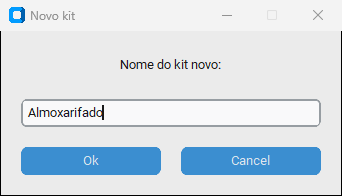
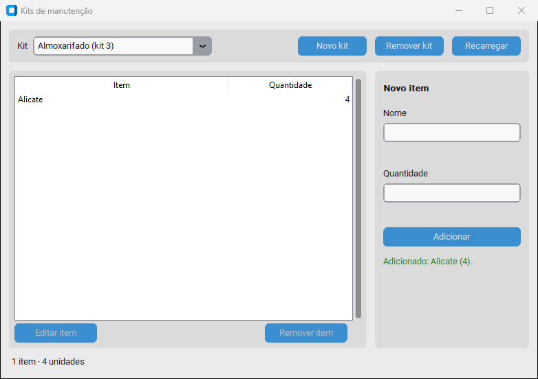

Técnico em Desenvolvimento de Sistemas · Plano de Curso 01/2025
Sprint do CRUD: histórias, testes de fluxo e devolutiva
A janela já lista, cadastra, edita e remove itens, mas ainda não cria kits, e nenhum teste passa pelo caminho inteiro que uma pessoa faz. Hoje é sprint: três histórias com critérios de aceite, um teste de fluxo que usa a janela de verdade ligada ao kits_teste, um roteiro de teste manual que outra dupla executa, e a devolutiva. No meio, você descobre por que os testes de fluxo de outra equipe passavam com o Salvar quebrado.
A aula continua na janela da A14, no DadosMySQL e no MySQL da A08. O teste de fluxo grava no kits_teste, nunca no kits. Use dados fictícios.
A coordenação quer usar a janela dos kits na semana que vem. Faltam duas coisas: criar kits sem abrir o cliente mysql e um jeito de garantir que o caminho inteiro funciona, do kit novo ao kit removido.
Outra equipe passou pelo mesmo e deixou um tests/test_fluxo_legado.py. Todos os testes dele passam. Mesmo assim, na homologação, vieram quatro relatos: o Salvar da edição não gravava nada; depois de rodar os testes, o banco kits perdeu os kits cadastrados; rodado sozinho, o teste de remover falha; e ele passa até quando a janela mostra Não removido.
Em dupla, antes de abrir o código: como um teste pode passar com o Salvar quebrado?
Entrega desta aula
No repositório do projeto: criar_kit em kits/repositorio.py; DadosMySQL.criar_kit e pedir_nome em abrir_janela.py; Novo kit e atalhos em kits/janela.py; tests/test_janela.py, tests/test_fontes.py e o novo tests/test_fluxo.py; e docs/testes.md com as histórias, o roteiro e os bugs que a outra dupla registrou. Faça um commit revisado e envie pelo canal combinado com a turma junto com o registro exportado desta página. Critério: os testes passam, e a outra dupla executou o seu roteiro e registrou o resultado.
Uma história diz quem quer o quê e para quê: como técnica do almoxarifado, quero criar um kit pela janela, para não depender de quem sabe SQL. Ela não diz como fazer; isso é da dupla.
O que transforma a história em trabalho combinado são os critérios de aceite: situações concretas, com o resultado que qualquer pessoa confere olhando a tela ou o banco. Dado o kit Treinamento Redes cadastrado, quando eu criar um kit com o nome treinamento redes, então a janela avisa Kit não criado: Já existe o kit Treinamento Redes, e nenhum kit é gravado. Deve ser fácil de usar não é critério: ninguém consegue dizer se passou.
A sprint tem tempo fixo. Por isso a dupla ordena o backlog e começa pelo que mais vale para quem usa; o que não couber fica registrado, e não meio feito.
Backlog da sprint
História
Quem quer o quê
Prioridade
H1 · Novo kit
A técnica cria um kit vazio pela janela e já pode cadastrar os itens dele
Obrigatória
H2 · Atalhos
Quem cadastra muito edita com duplo clique, cancela com Esc e remove com Delete
Obrigatória
H3 · Caminho provado
A coordenação quer saber que o caminho inteiro funciona antes de usar
Obrigatória
H4 · Renomear kit
A técnica corrige o nome de um kit sem apagar e criar de novo
Bônus
Critério que ninguém confere
Cada pessoa entende uma coisa, e a discussão vira opinião.
- Criar kit deve funcionar bem.
- Nomes repetidos devem ser tratados.
Dado, quando, então
A situação, a ação e o que se vê na tela ou no banco.
- Dado o kit Treinamento Redes, quando crio treinamento redes,
então vejo Kit não criado: Já existe o kit Treinamento Redes
e o banco continua com dois kits.
Criar kit: a regra do domínio e a palavra do banco ↗
criar_kit, no repositório, passa o nome pelo Kit da A05, que recusa nome vazio e tira os espaços das pontas, confere se outro kit já tem esse nome e só então insere. A conferência é um SELECT com WHERE nome = %s, e quem compara é o MySQL: com a collation do banco kits, Almoxarifado, almoxarifado e ALMOXARIFADO são o mesmo nome, como vimos na A13. A mensagem usa o nome como está no banco.
Como editar_item, criar_kit não faz commit: o DadosMySQL a chama dentro de em_transacao. Na janela, Novo kit pergunta o nome com pedir_nome, uma função recebida de fora, como perguntar. No aplicativo, ela abre uma CTkInputDialog e devolve o texto, ou None se a pessoa cancelar; nos testes, devolve o que o teste mandar.
Um limite fica registrado: duas pessoas criando o mesmo nome no mesmo instante podem passar as duas pela conferência, porque nenhuma linha é travada. Quem fecha essa porta é uma restrição UNIQUE no esquema; a dupla registra a pendência no docs/testes.md, e o esquema volta a ser assunto na carga em lote.
Delete só faz sentido com uma linha escolhida, então o bind fica na lista: self.lista.bind('<Delete>', ...). Esc cancela a edição de qualquer lugar da janela, então o bind fica na própria janela: todo widget tem, entre as suas etiquetas de evento, a janela onde está, e o evento chega a ela depois de passar pelo widget com o foco.
O duplo clique chega com as coordenadas do mouse. identify_row(evento.y) diz qual linha está ali, ou devolve vazio fora das linhas; só com uma linha a janela escolhe e edita. Nos testes, o Tk não aceita gerar <Double-1> pronto: dois cliques seguidos no mesmo ponto viram um duplo clique, como acontece com o mouse.
Até aqui, cada camada tem os seus testes: as regras sem banco, o repositório no kits_teste, a janela com o banco de mentira. Eles dizem onde está um defeito, mas nenhum passa pelo caminho que a pessoa faz. O teste de fluxo junta tudo de verdade, menos a pessoa: a JanelaItens com o DadosMySQL ligado ao kits_teste.
A pessoa vira código. invoke() é o clique, com o command de verdade; selection_set escolhe a linha; os campos recebem texto com insert. As perguntas e a caixa de nome são as funções recebidas no __init__: no teste, cada uma tira a próxima resposta de uma lista, e o fim do teste confere que nenhuma sobrou nem faltou.
Cada passo é conferido dos dois lados: o que a janela mostra e o que ficou no kits_teste. Só a tela engana quando a lista vem de uma leitura que falhou; só o banco engana quando a janela não mostrou o aviso. A jornada é um teste só, com passos em ordem, porque é um caminho só. Entre um teste e outro, nada é compartilhado: cada um recria as tabelas no setUp.
Nunca no kits
O teste de fluxo recria as tabelas. Se ele usar o banco.ini sem a configuração TESTE, apaga o banco kits, com o que a turma cadastrou. É o relato 2 da equipe anterior.
Quatro jeitos de um teste passar sem provar nada ↗
Um teste existe para falhar quando o programa estiver errado. Se ele não falha com o defeito, passar não quer dizer nada. A prova é a de sempre nesta UC: quebre o código de propósito e veja se o teste percebe.
Os quatro relatos da equipe anterior são quatro jeitos comuns de errar nisso.
Testes que mentem
Jeito
Como aparece
O que provar
Por fora
Chama dados.editar ou a função do botão direto, sem passar pelo clique
Quebre o command ou o _salvar: o teste precisa falhar
Banco errado
Usa a configuração padrão, que é o banco kits
Cadastre algo no kits, rode os testes e confira se continua lá
Depende da ordem
Um teste usa o que outro criou, guardado na classe
Rode o teste sozinho: python -m unittest tests.arquivo.Classe.teste
Sem comparação
assertTrue(texto, 'Removido: Alicate.'): o segundo argumento é só a mensagem de erro
Faça a operação ser recusada: o teste precisa falhar
Tutorial: o teste que passou com o botão quebrado ↗
O tutorial volta ao acervo da A14, sem a atualização. Crie acervo.py na raiz do projeto com o passo 1 e test_acervo.py ao lado, com o passo 2. Rode os testes com .\.venv\Scripts\python.exe -m unittest -v test_acervo.
As telas abaixo são de execuções reais desse código, no Windows 11 com Python 3.14 e CustomTkinter 6.0.0; só o tempo do Ran foi fixado, porque muda a cada vez.
Passo 1 · O arquivo acervo.py inteiro
from tkinter import ttk
import customtkinter as ctk
ACERVO = {1: ('Guia de Redes', 2), 2: ('Atlas', 1), 3: ('Dicionário', 4)}
ctk.set_appearance_mode('light')
janela = ctk.CTk()
janela.title('Acervo do Centro')
janela.geometry('520x330')
janela.grid_columnconfigure(0, weight=1)
janela.grid_rowconfigure(0, weight=1)
lista = ttk.Treeview(janela, columns=('titulo', 'exemplares'), show='headings', selectmode='browse')
lista.heading('titulo', text='Título')
lista.heading('exemplares', text='Exemplares')
lista.grid(row=0, column=0, columnspan=2, sticky='nsew', padx=12, pady=(12, 6))
exemplares = ctk.CTkEntry(janela, width=90, placeholder_text='Exemplares')
exemplares.grid(row=1, column=0, padx=12, pady=6, sticky='e')
salvar = ctk.CTkButton(janela, text='Salvar', width=90)
salvar.grid(row=1, column=1, padx=(0, 12), pady=6)
aviso = ctk.CTkLabel(janela, text='', anchor='w')
aviso.grid(row=2, column=0, columnspan=2, padx=12, pady=(0, 12), sticky='ew')
def mostrar():
lista.delete(*lista.get_children())
for livro_id, (titulo, quantos) in ACERVO.items():
lista.insert('', 'end', iid=str(livro_id), values=(titulo, quantos))
def gravar():
livro_id = int(lista.selection()[0])
titulo = ACERVO[livro_id][0]
ACERVO[livro_id] = (titulo, int(exemplares.get()))
aviso.configure(text=f'Salvo: {titulo} com {exemplares.get()}')
mostrar()
salvar.configure(command=gravar)
mostrar()
# Só abre a janela quando o arquivo é rodado; importado por um teste, não trava no mainloop.
if __name__ == '__main__':
janela.mainloop()
PS C:\projetos\kits> .\.venv\Scripts\python.exe -m unittest -v test_acervo
test_salvar_troca_os_exemplares (test_acervo.TestAcervo.test_salvar_troca_os_exemplares) ... ok
----------------------------------------------------------------------
Ran 1 test in 0.000s
OK
Passo 3 · Quebre o botão e rode de novo
Apague a linha salvar.configure(command=gravar) do acervo.py e rode o mesmo teste. Abra a janela com .\.venv\Scripts\python.exe acervo.py: clicar em Salvar não faz nada.
PS C:\projetos\kits> .\.venv\Scripts\python.exe -m unittest -v test_acervo
test_salvar_troca_os_exemplares (test_acervo.TestAcervo.test_salvar_troca_os_exemplares) ... ok
----------------------------------------------------------------------
Ran 1 test in 0.000s
OK
Repare: O teste chama gravar() direto, então não percebe que o botão não chama ninguém. É o relato 1.
Passo 4 · test_acervo.py, pelo botão
import unittest
import acervo
class TestAcervo(unittest.TestCase):
def test_salvar_troca_os_exemplares(self):
# Como a pessoa faz: escolhe a linha, digita e clica. invoke() é o clique, com o command de verdade.
acervo.lista.selection_set('2')
acervo.exemplares.delete(0, 'end')
acervo.exemplares.insert(0, '3')
acervo.salvar.invoke()
# E confere o que a pessoa veria, além do dado.
self.assertEqual(acervo.lista.item('2', 'values'), ('Atlas', '3'))
self.assertEqual(acervo.aviso.cget('text'), 'Salvo: Atlas com 3')
self.assertEqual(acervo.ACERVO[2], ('Atlas', 3))
Passo 4 · Pelo botão, o defeito aparece
Troque o test_acervo.py pelo passo 4 e rode, ainda com o botão quebrado.
PS C:\projetos\kits> .\.venv\Scripts\python.exe -m unittest -v test_acervo
test_salvar_troca_os_exemplares (test_acervo.TestAcervo.test_salvar_troca_os_exemplares) ... FAIL
======================================================================
FAIL: test_salvar_troca_os_exemplares (test_acervo.TestAcervo.test_salvar_troca_os_exemplares)
----------------------------------------------------------------------
Traceback (most recent call last):
File "C:\projetos\kits\test_acervo.py", line 14, in test_salvar_troca_os_exemplares
self.assertEqual(acervo.lista.item('2', 'values'), ('Atlas', '3'))
~~~~~~~~~~~~~~~~^^^^^^^^^^^^^^^^^^^^^^^^^^^^^^^^^^^^^^^^^^^^^^^^^^
AssertionError: Tuples differ: ('Atlas', '1') != ('Atlas', '3')
First differing element 1:
'1'
'3'
- ('Atlas', '1')
? ^
+ ('Atlas', '3')
? ^
----------------------------------------------------------------------
Ran 1 test in 0.000s
FAILED (failures=1)
Repare: O clique de verdade não chamou gravar: a lista continua com 1 e o teste falha, dizendo o que a pessoa veria.
Passo 4 · E passa com o botão de volta
Devolva a linha salvar.configure(command=gravar) e rode outra vez.
PS C:\projetos\kits> .\.venv\Scripts\python.exe -m unittest -v test_acervo
test_salvar_troca_os_exemplares (test_acervo.TestAcervo.test_salvar_troca_os_exemplares) ... ok
----------------------------------------------------------------------
Ran 1 test in 0.000s
OK
O teste de fluxo roda em segundos, mas não vê o que só uma pessoa vê: o botão que some numa janela menor, a mensagem que ninguém entende, a caixa de nome que abre atrás da janela. Por isso a dupla também escreve um roteiro de teste manual: casos numerados, cada um com a situação de partida, os passos e o resultado esperado, com dados fictícios e sem pular nenhum clique.
Na troca, outra dupla executa o seu roteiro no seu computador, sem a sua ajuda, e anota o resultado de cada caso. O que não sair como esperado vira um bug registrado: os passos para reproduzir, o esperado, o obtido, a evidência (o aviso, a captura, a linha no banco) e a gravidade. Não funciona não é bug registrado: ninguém consegue reproduzir.
A devolutiva é sobre o programa e o roteiro, não sobre as pessoas. Quem recebe confere cada bug, reproduz e decide: corrige com um teste que reprova o defeito, ou registra como pendente, com o motivo. Um caso que a outra dupla não conseguiu executar sem perguntar também é um achado: é o roteiro que precisa melhorar.
Um bug bem registrado
Campo
Exemplo
Id e título
B1 · Kit com espaços no fim aparece duplicado
Passos
1. Abrir abrir_janela.py. 2. Novo kit. 3. Digitar Almoxarifado com um espaço no fim. 4. OK. 5. Repetir com Almoxarifado sem espaço.
Esperado
Kit não criado: Já existe o kit Almoxarifado
Obtido
Dois kits Almoxarifado no seletor
Evidência
SELECT id, nome, LENGTH(nome) FROM kit mostra 12 e 13 caracteres
Gravidade e status
Média · corrigido com teste em tests/test_fontes.py
Continue no repositório do projeto, na raiz, com o .venv e o banco.ini da A08. Uma pessoa opera e a outra confere; troquem os papéis depois do intervalo. Combinem com a dupla vizinha a troca de roteiros para os últimos 30 minutos antes do fechamento.
A ordem sugerida é a do backlog: histórias e critérios, criar_kit com os testes no kits_teste, DadosMySQL, janela e testes de mentira, teste de fluxo e, por fim, os testes herdados. Se consultar IA, registre a ajuda recebida e confirme cada sugestão rodando os testes.
A caixa do Novo kit
Capturada com abrir_janela.py: Novo kit abre a CTkInputDialog do pedir_nome, com Almoxarifado digitado.

Repare: Os botões Ok e Cancel são do CustomTkinter 6.0.0, que não traduz a caixa; para trocá-los, a CTkInputDialog teria de ser refeita.
O kit novo, pronto para receber itens
Capturada com abrir_janela.py lendo o banco kits, depois de criar o Almoxarifado e adicionar um Alicate.

docs/testes.md: histórias e critérios de aceite
Crie docs/testes.md com as histórias H1 a H3 do backlog, na ordem em que a dupla vai fazer. H1 já tem os critérios; escreva pelo menos três critérios para H2 e dois para H3, no formato dado, quando, então. Registre também a pendência do nome repetido criado ao mesmo tempo. O roteiro e os bugs entram no mesmo arquivo, na última atividade. Entrega: docs/testes.md.
Concluído quando: Outra pessoa lê cada critério e diz, olhando a tela ou o banco, se passou ou não; nenhum critério depende de opinião.
Dica para realizar a atividade
Volte ao versus da seção de histórias. Cada critério tem uma situação de partida?
# Testes do aplicativo de kits
## Sprint do CRUD (A15)
### H1 · Novo kit
Como técnica do almoxarifado, quero criar um kit pela janela, para não depender de quem sabe SQL.
- Dado o seletor em Treinamento Redes, quando crio o kit Almoxarifado, então o seletor mostra Almoxarifado (kit N), a lista está vazia e o aviso diz Kit criado.
- Dado o kit Treinamento Redes, quando crio treinamento redes, então vejo Kit não criado: Já existe o kit Treinamento Redes, e o banco continua com os mesmos kits.
- Dado o pedido do nome, quando clico em Cancel, então nada é gravado e o seletor continua no kit de antes.
### H2 · Atalhos
Como quem cadastra muitos itens, quero ...
### H3 · Caminho provado
Como coordenação, quero ...
### Pendências
## Roteiro de teste manual
## Bugs recebidos na troca
Arquivo docs/testes.md do projeto. A prova é a dupla vizinha conferir os critérios sem perguntar nada.
kits/repositorio.py: criar_kit
Acrescente criar_kit(con, nome) ao repositório, seguindo os comentários: a regra do Kit, a recusa de nome repetido com o nome do banco e o INSERT, devolvendo o id. Não faz commit nem rollback. Entrega: kits/repositorio.py.
Concluído quando: Os testes de criar kit de tests/test_fontes.py passam, e os testes das aulas anteriores continuam passando.
Dica para realizar a atividade
Quem tira os espaços das pontas já existe desde a A05. E quem decide que almoxarifado e Almoxarifado são iguais?
# Acrescente ao fim do seu kits/repositorio.py.
def criar_kit(con, nome):
"""Cadastra um kit vazio e devolve o id. Não grava nem desfaz: rode dentro de em_transacao."""
# 1. Passe o nome pela regra do domínio: Kit(nome), da A05, recusa nome vazio e tira os espaços das pontas.
# 2. Se outro kit já tem esse nome: ValueError('Já existe o kit Nome'), com o nome como está no banco.
# Deixe a comparação para o MySQL: no kits, Almoxarifado e almoxarifado são o mesmo nome.
# 3. Insira o kit e devolva o id gerado.
...
Na raiz do projeto. Testes: .\.venv\Scripts\python.exe -m unittest -v, na raiz do projeto, com o MySQL ligado e o banco.ini da A08. Os testes recriam as tabelas no kits_teste; o kits fica intacto.
tests/test_fontes.py: criar kit
Acrescente à classe TestFontes o teste do arquivo e escreva os dois marcados com Complete: nome repetido com outras maiúsculas e nome só com espaços. Entrega: tests/test_fontes.py.
Concluído quando: Os dezessete testes passam com o seu código. Depois tire de criar_kit a linha do Kit(nome): o teste do nome só com espaços precisa falhar. Desfaça a troca.
Dica para realizar a atividade
Para provar que nada foi gravado, conte os kits antes e depois.
# Acrescente à classe TestFontes do seu tests/test_fontes.py.
# A15: criar kit.
def test_criar_kit_devolve_o_id_e_o_kit_nasce_vazio(self):
kit_id = self.dados.criar_kit(' Almoxarifado ')
self.assertIn((kit_id, 'Almoxarifado'), self.dados.listar_kits())
self.assertEqual(self.dados.listar_itens(kit_id), [])
# Complete: criar_kit('treinamento redes') levanta ValueError com 'Já existe o kit Treinamento Redes',
# e o banco continua com dois kits.
# Complete: criar_kit(' ') levanta ValueError com a mensagem do Kit da A05, e nada é gravado.
Na raiz do projeto. Testes: .\.venv\Scripts\python.exe -m unittest -v, na raiz do projeto, com o MySQL ligado e o banco.ini da A08. Os testes recriam as tabelas no kits_teste; o kits fica intacto.
abrir_janela.py: criar_kit e pedir_nome
Acrescente ao DadosMySQL o método criar_kit, que grava com a função do repositório, e escreva pedir_nome com a CTkInputDialog. O if __name__ passa pedir_nome à janela. Entrega: abrir_janela.py.
Concluído quando: A janela aberta com .\.venv\Scripts\python.exe abrir_janela.py cria um kit no banco kits, e Cancel não grava nada.
Dica para realizar a atividade
É o mesmo formato do editar: uma linha com _gravar.
# Mudanças no seu abrir_janela.py da A14. protegido e o resto do DadosMySQL continuam iguais.
import customtkinter as ctk
# No import do repositório, acrescente criar_kit.
class DadosMySQL:
...
def criar_kit(self, nome):
"""Grava com criar_kit do repositório e devolve o id do kit novo."""
...
def pedir_nome(texto):
"""Mostra ctk.CTkInputDialog(title='Novo kit', text=texto) e devolve o que get_input() devolver:
o texto digitado, ou None se a pessoa cancelar ou fechar a caixa."""
...
if __name__ == '__main__':
JanelaItens(DadosMySQL(), perguntar, pedir_nome=pedir_nome).mainloop()
Na raiz do projeto, com o MySQL ligado: .\.venv\Scripts\python.exe abrir_janela.py.
kits/janela.py: Novo kit e atalhos
Faça na sua JanelaItens da A14 as mudanças descritas no arquivo: o pedir_nome no __init__, o botão Novo kit, criar_kit e escolher_kit, o duplo clique, o Delete na lista e o Esc na janela. A janela continua sem importar nada do banco. Entrega: kits/janela.py.
Concluído quando: Os trinta e oito testes de tests/test_janela.py passam, inclusive os três que você vai completar, e as duas imagens acima se repetem na sua máquina.
Dica para realizar a atividade
Esc vale para a janela inteira; Delete, só para a lista. Onde fica cada bind?
# Mudanças na sua kits/janela.py da A14. O resto da JanelaItens continua igual.
class JanelaItens(ctk.CTk):
"""dados ganha criar_kit(nome), que devolve o id do kit novo. pedir_nome(texto) devolve o texto digitado
ou None, se a pessoa desistir."""
def __init__(self, dados, perguntar, intervalo_ms=10_000, pedir_nome=None):
# Guarde pedir_nome. A janela fica com minsize(720, 420), para os três botões do topo caberem.
# Esc em qualquer lugar da janela cancela a edição: self.bind('<Escape>', ...).
...
def _montar_topo(self):
# Antes do Remover kit, self.novo_kit: Novo kit, chamando self.criar_kit,
# desligado se a janela não recebeu pedir_nome. Os três botões com width=100.
...
def _montar_lista(self):
# Na lista: <Double-1> chama self._duplo_clique; <Delete> remove a linha escolhida, com a pergunta de sempre.
...
def _duplo_clique(self, evento):
"""A linha sob o mouse (self.lista.identify_row(evento.y)) fica escolhida e vai para a edição.
Fora das linhas, não faz nada."""
...
def escolher_kit(self, kit_id):
"""Mostra o kit de id kit_id e devolve o rótulo dele, ou None se ele não estiver no seletor."""
...
def criar_kit(self):
"""Pede o nome ('Nome do kit novo:'); None: não faz nada. Recusa: Kit não criado: e a mensagem.
Sucesso: cancela a edição, recarrega, mostra o kit novo e avisa Kit criado: Rótulo., com o foco no Nome."""
...
Na raiz do projeto. Testes: .\.venv\Scripts\python.exe -m unittest -v, na raiz do projeto. Os testes da janela usam um banco de mentira e abrem janelas de verdade por alguns instantes; não mexa no mouse nem no teclado enquanto rodam.
tests/test_janela.py: Novo kit e atalhos
O arquivo substitui o da A14: o BancoDeMentira ganhou criar_kit e pedir_nome, e a janela recebe pedir_nome. Ele já tem trinta e cinco testes, inclusive o do duplo clique. Escreva os três marcados com Complete. Entrega: tests/test_janela.py.
Concluído quando: Os trinta e oito testes passam com o seu código. Depois apague o bind do <Delete>: o seu teste do Delete precisa falhar. Desfaça a troca.
Dica para realizar a atividade
Para uma tecla chegar, o widget precisa do foco: focus_set(), update() e só então event_generate.
"""A janela com um banco de mentira, um objeto com os mesmos métodos do DadosMySQL: roda sem MySQL, mas abre uma janela de verdade por alguns instantes."""
import copy
import time
import unittest
from kits.janela import JanelaItens
KITS = [(1, 'Treinamento Redes'), (2, 'Treinamento Suporte')]
ITENS = {1: [(1, 'Cabo', 3), (2, 'Notebook', 2)], 2: [(3, 'Cabo', 5)]}
FORA = ConnectionError('Sem conexão com o MySQL (erro 2003).')
def fechar(janela):
# O CustomTkinter agenda tarefas com after (o ícone da barra de título, por exemplo).
# Cancelar antes de destruir evita avisos de "invalid command name" no fim do teste.
for tarefa in janela.tk.call('after', 'info'):
janela.after_cancel(tarefa)
janela.destroy()
class BancoDeMentira:
"""Guarda kits e itens em listas e registra o que a janela pediu. falhas: {nome do método: exceção}."""
def __init__(self, kits=KITS, itens=ITENS, resposta=True, nome_novo=None):
self.kits = list(kits)
self.itens = copy.deepcopy(itens)
self.resposta = resposta
self.nome_novo = nome_novo
self.pedidos_de_nome = []
self.kits_criados = []
self.falhas = {}
self.pedidos = []
self.entregues = []
self.removidos = []
self.perguntas = []
self.editados = []
self.kits_removidos = []
def _talvez_falhar(self, nome):
if nome in self.falhas:
raise self.falhas[nome]
def listar_kits(self):
self._talvez_falhar('listar_kits')
return list(self.kits)
def listar_itens(self, kit_id):
self._talvez_falhar('listar_itens')
self.pedidos.append(kit_id)
return list(self.itens.get(kit_id, []))
def criar_kit(self, nome):
self._talvez_falhar('criar_kit')
kit_id = max([k for k, _ in self.kits], default=0) + 1
self.kits.append((kit_id, nome.strip()))
self.kits_criados.append(nome)
return kit_id
def adicionar(self, kit_id, item):
self._talvez_falhar('adicionar')
self.entregues.append((kit_id, item.nome, item.quantidade))
self.itens.setdefault(kit_id, []).append((100 + len(self.entregues), item.nome, item.quantidade))
def remover(self, item_id):
self._talvez_falhar('remover')
self.removidos.append(item_id)
for kit_id, itens in self.itens.items():
self.itens[kit_id] = [i for i in itens if i[0] != item_id]
def editar(self, item_id, antes, depois):
self._talvez_falhar('editar')
for itens in self.itens.values():
for i, (atual_id, nome, quantidade) in enumerate(itens):
if atual_id == item_id:
if (nome, quantidade) != (antes.nome, antes.quantidade):
raise ValueError(f'{antes.nome} mudou depois que você leu: agora é {nome} com {quantidade}')
itens[i] = (item_id, depois.nome, depois.quantidade)
self.editados.append((item_id, depois.nome, depois.quantidade))
return
raise LookupError(f'Item {item_id} não existe')
def remover_kit(self, kit_id):
self._talvez_falhar('remover_kit')
if self.itens.get(kit_id):
raise ValueError(f'Kit {kit_id} ainda tem itens: remova os itens antes')
self.kits = [k for k in self.kits if k[0] != kit_id]
self.kits_removidos.append(kit_id)
def perguntar(self, texto):
self.perguntas.append(texto)
return self.resposta
def pedir_nome(self, texto):
self.pedidos_de_nome.append(texto)
return self.nome_novo
class TestJanela(unittest.TestCase):
def abrir(self, banco=None, intervalo_ms=60_000):
self.banco = banco or BancoDeMentira()
janela = JanelaItens(self.banco, self.banco.perguntar, intervalo_ms, pedir_nome=self.banco.pedir_nome)
self.addCleanup(fechar, janela)
janela.update()
return janela
def linhas(self, janela):
return [tuple(janela.lista.item(i, 'values')) for i in janela.lista.get_children()]
def escolher(self, janela, kit_id):
rotulo = next(r for r in janela.kit.cget('values') if r.endswith(f'(kit {kit_id})'))
janela.kit.set(rotulo)
janela.mostrar()
def preencher(self, janela, nome, quantidade):
for campo, texto in ((janela.nome, nome), (janela.quantidade, quantidade)):
campo.delete(0, 'end')
if texto:
campo.insert(0, texto)
def selecionar(self, janela, item_id):
janela.lista.selection_set(str(item_id))
janela.update()
def erros(self, janela):
return janela.erro_nome.cget('text'), janela.erro_quantidade.cget('text')
# A11: a lista e a grade.
def test_abre_no_primeiro_kit_com_os_itens_dele(self):
janela = self.abrir()
self.assertEqual(janela.kit_atual(), 1)
self.assertEqual(self.linhas(janela), [('Cabo', '3'), ('Notebook', '2')])
def test_cada_linha_guarda_o_id_do_item(self):
janela = self.abrir()
self.assertEqual(janela.lista.get_children(), ('1', '2'))
def test_trocar_de_kit_troca_a_lista_sem_repetir(self):
janela = self.abrir()
self.escolher(janela, 2)
self.escolher(janela, 1)
self.assertEqual(self.linhas(janela), [('Cabo', '3'), ('Notebook', '2')])
self.assertEqual(self.banco.pedidos, [1, 2, 1])
def test_status_conta_itens_e_unidades(self):
janela = self.abrir()
self.assertEqual(janela.status.cget('text'), '2 itens · 5 unidades')
self.escolher(janela, 2)
self.assertEqual(janela.status.cget('text'), '1 item · 5 unidades')
def test_lista_cresce_com_a_janela(self):
janela = self.abrir()
janela.geometry('640x420')
janela.update()
largura, altura = janela.lista.winfo_width(), janela.lista.winfo_height()
janela.geometry('1100x740')
janela.update()
self.assertGreater(janela.lista.winfo_width(), largura + 300)
self.assertGreater(janela.lista.winfo_height(), altura + 200)
def test_sem_kits_avisa_e_nao_deixa_adicionar(self):
janela = self.abrir(BancoDeMentira(kits=[]))
self.assertEqual(janela.status.cget('text'), 'Nenhum kit cadastrado.')
self.assertEqual(self.banco.pedidos, [])
self.assertEqual(janela.adicionar.cget('state'), 'disabled')
# A12: eventos e validação.
def test_abre_sem_erros_e_so_o_clique_valida(self):
janela = self.abrir()
self.assertEqual(self.erros(janela), ('', ''))
janela.adicionar.invoke()
self.assertNotEqual(self.erros(janela), ('', ''))
self.assertEqual(self.banco.entregues, [])
def test_valido_entrega_e_a_lista_mostra_o_item_novo(self):
janela = self.abrir()
self.preencher(janela, ' Alicate ', '4')
janela.adicionar.invoke()
self.assertEqual(self.banco.entregues, [(1, 'Alicate', 4)])
self.assertEqual((janela.nome.get(), janela.quantidade.get()), ('', ''))
self.assertEqual(janela.aviso.cget('text'), 'Adicionado: Alicate (4).')
self.assertEqual(self.linhas(janela)[-1], ('Alicate', '4'))
def test_quantidade_invalida_mostra_a_mensagem_do_dominio(self):
janela = self.abrir()
for texto, mensagem in (('dez', "'dez' não é um número inteiro"), ('0', '0 não é maior que zero'),
('2.5', "'2.5' não é um número inteiro")):
with self.subTest(texto):
self.preencher(janela, 'Alicate', texto)
janela.adicionar.invoke()
self.assertEqual(self.erros(janela), ('', mensagem))
self.assertEqual(self.banco.entregues, [])
def test_nome_em_branco_e_quantidade_errada_aparecem_juntos(self):
janela = self.abrir()
self.preencher(janela, ' ', '-1')
janela.adicionar.invoke()
self.assertEqual(self.erros(janela), ('nome deve ser texto não vazio', '-1 não é maior que zero'))
def test_enter_no_campo_confirma_como_o_botao(self):
janela = self.abrir()
self.preencher(janela, 'Alicate', '4')
janela.quantidade.focus_set()
janela.update()
janela.quantidade.event_generate('<Return>')
janela.update()
self.assertEqual(self.banco.entregues, [(1, 'Alicate', 4)])
def test_digitar_no_campo_apaga_o_erro_dele(self):
janela = self.abrir()
self.preencher(janela, '', 'dez')
janela.adicionar.invoke()
janela.quantidade.focus_set()
janela.update()
janela.quantidade.event_generate('<KeyRelease>', keysym='BackSpace')
janela.update()
self.assertEqual(self.erros(janela), ('nome deve ser texto não vazio', ''))
def test_recusa_de_quem_grava_aparece_e_os_campos_ficam(self):
banco = BancoDeMentira()
banco.falhas['adicionar'] = LookupError('Kit 1 não existe')
janela = self.abrir(banco)
self.preencher(janela, 'Alicate', '4')
janela.adicionar.invoke()
self.assertEqual(janela.aviso.cget('text'), 'Não adicionado: Kit 1 não existe')
self.assertEqual((janela.nome.get(), janela.quantidade.get()), ('Alicate', '4'))
def test_defeito_de_quem_grava_nao_e_escondido(self):
banco = BancoDeMentira()
banco.falhas['adicionar'] = AttributeError("'ItemKit' object has no attribute 'nme'")
janela = self.abrir(banco)
self.preencher(janela, 'Alicate', '4')
with self.assertRaises(AttributeError):
janela.confirmar()
# A13: remover e banco fora do ar.
def test_remover_so_liga_com_uma_linha_escolhida(self):
janela = self.abrir()
self.assertEqual(janela.remover.cget('state'), 'disabled')
self.selecionar(janela, 2)
self.assertEqual(janela.remover.cget('state'), 'normal')
self.escolher(janela, 2)
self.assertEqual(janela.remover.cget('state'), 'disabled')
def test_remover_pergunta_e_apaga_pelo_id_so_com_sim(self):
janela = self.abrir(BancoDeMentira(resposta=False))
self.selecionar(janela, 2)
janela.remover.invoke()
self.assertEqual(self.banco.perguntas, ['Remover Notebook deste kit? A remoção não pode ser desfeita.'])
self.assertEqual(self.banco.removidos, [])
self.banco.resposta = True
self.selecionar(janela, 2)
janela.remover.invoke()
self.assertEqual(self.banco.removidos, [2])
self.assertEqual(self.linhas(janela), [('Cabo', '3')])
self.assertEqual(janela.aviso.cget('text'), 'Removido: Notebook.')
def test_remover_recusado_avisa_e_mostra_a_lista_de_agora(self):
banco = BancoDeMentira()
banco.falhas['remover'] = LookupError('Item 2 não existe')
janela = self.abrir(banco)
self.selecionar(janela, 2)
janela.remover.invoke()
self.assertEqual(janela.aviso.cget('text'), 'Não removido: Item 2 não existe')
self.assertEqual(banco.pedidos, [1, 1])
def test_banco_fora_ao_abrir_avisa_e_recarregar_recupera(self):
banco = BancoDeMentira()
banco.falhas['listar_kits'] = FORA
janela = self.abrir(banco)
self.assertEqual(janela.status.cget('text'), str(FORA))
self.assertEqual(janela.adicionar.cget('state'), 'disabled')
del banco.falhas['listar_kits']
janela.recarregar_botao.invoke()
self.assertEqual(self.linhas(janela), [('Cabo', '3'), ('Notebook', '2')])
self.assertEqual(janela.adicionar.cget('state'), 'normal')
def test_recarregar_mantem_o_kit_e_mostra_o_que_mudou(self):
janela = self.abrir()
self.escolher(janela, 2)
self.banco.itens[2].append((4, 'Alicate', 1))
janela.recarregar_botao.invoke()
self.assertEqual(janela.kit_atual(), 2)
self.assertEqual(self.linhas(janela), [('Cabo', '5'), ('Alicate', '1')])
def test_banco_fora_ao_adicionar_avisa_e_os_campos_ficam(self):
banco = BancoDeMentira()
janela = self.abrir(banco)
banco.falhas['adicionar'] = FORA
self.preencher(janela, 'Alicate', '4')
janela.adicionar.invoke()
self.assertEqual(janela.aviso.cget('text'), f'Não adicionado: {FORA}')
self.assertEqual(janela.nome.get(), 'Alicate')
def test_banco_fora_ao_trocar_de_kit_avisa_no_status(self):
banco = BancoDeMentira()
janela = self.abrir(banco)
banco.falhas['listar_itens'] = FORA
self.escolher(janela, 2)
self.assertEqual(janela.status.cget('text'), str(FORA))
self.assertEqual(self.linhas(janela), [])
# A14: editar, sincronizar e remover kit.
def editar_o(self, janela, item_id):
self.selecionar(janela, item_id)
janela.editar.invoke()
def test_editar_preenche_o_formulario_e_troca_o_botao(self):
janela = self.abrir()
self.assertEqual(janela.editar.cget('state'), 'disabled')
self.editar_o(janela, 2)
janela.update()
self.assertEqual((janela.nome.get(), janela.quantidade.get()), ('Notebook', '2'))
self.assertEqual((janela.titulo_form.cget('text'), janela.adicionar.cget('text')), ('Editar item', 'Salvar'))
self.assertTrue(janela.cancelar.winfo_ismapped())
def test_salvar_grava_e_volta_ao_novo_item(self):
janela = self.abrir()
self.editar_o(janela, 2)
self.preencher(janela, 'Notebook i5', '3')
janela.adicionar.invoke()
self.assertEqual(self.banco.editados, [(2, 'Notebook i5', 3)])
self.assertEqual(self.linhas(janela), [('Cabo', '3'), ('Notebook i5', '3')])
self.assertEqual(janela.aviso.cget('text'), 'Salvo: Notebook i5 (3).')
self.assertEqual((janela.titulo_form.cget('text'), janela.nome.get()), ('Novo item', ''))
self.assertEqual(self.banco.entregues, [])
def test_salvar_quando_outra_pessoa_mudou_avisa_e_mostra_o_banco(self):
janela = self.abrir()
self.editar_o(janela, 2)
self.banco.itens[1][1] = (2, 'Notebook', 5)
self.preencher(janela, 'Notebook', '1')
janela.adicionar.invoke()
self.assertEqual(janela.aviso.cget('text'), 'Não salvo: Notebook mudou depois que você leu: agora é Notebook com 5')
self.assertEqual(self.linhas(janela), [('Cabo', '3'), ('Notebook', '5')])
self.assertEqual(janela.titulo_form.cget('text'), 'Novo item')
def test_cancelar_volta_sem_gravar(self):
janela = self.abrir()
self.editar_o(janela, 2)
janela.cancelar.invoke()
janela.update()
self.assertEqual((janela.titulo_form.cget('text'), janela.nome.get()), ('Novo item', ''))
self.assertFalse(janela.cancelar.winfo_ismapped())
self.assertEqual(self.banco.editados, [])
def test_trocar_de_kit_cancela_a_edicao(self):
janela = self.abrir()
self.editar_o(janela, 2)
rotulo = next(r for r in janela.kit.cget('values') if r.endswith('(kit 2)'))
janela.kit.set(rotulo)
janela._trocou_kit(rotulo)
self.assertEqual(janela.titulo_form.cget('text'), 'Novo item')
self.assertEqual(self.linhas(janela), [('Cabo', '5')])
def test_sincronizar_mostra_o_que_mudou_e_mantem_a_linha_escolhida(self):
janela = self.abrir()
self.selecionar(janela, 2)
self.banco.itens[1][1] = (2, 'Notebook', 7)
janela.sincronizar()
self.assertEqual(self.linhas(janela), [('Cabo', '3'), ('Notebook', '7')])
self.assertEqual(janela.lista.selection(), ('2',))
self.assertEqual(janela.remover.cget('state'), 'normal')
def test_sincronizar_nao_mexe_durante_a_edicao(self):
janela = self.abrir()
self.editar_o(janela, 2)
self.preencher(janela, 'Notebook', '9')
pedidos = len(self.banco.pedidos)
janela.sincronizar()
self.assertEqual(len(self.banco.pedidos), pedidos)
self.assertEqual(janela.quantidade.get(), '9')
def test_sincroniza_sozinha_a_cada_intervalo_sem_acumular(self):
# 200 ms durante 0,7 s: três leituras. Se os agendamentos se acumulassem, seriam 2 + 4 + 8.
janela = self.abrir(intervalo_ms=200)
pedidos = len(self.banco.pedidos)
fim = time.monotonic() + 0.7
while time.monotonic() < fim:
janela.update()
time.sleep(0.02)
novos = len(self.banco.pedidos) - pedidos
self.assertGreaterEqual(novos, 2)
self.assertLessEqual(novos, 5)
def test_remover_kit_vazio_pergunta_e_recarrega(self):
banco = BancoDeMentira(kits=KITS + [(3, 'Almoxarifado')])
janela = self.abrir(banco)
rotulo = next(r for r in janela.kit.cget('values') if r.endswith('(kit 3)'))
janela.kit.set(rotulo)
janela.mostrar()
janela.remover_kit.invoke()
self.assertEqual(banco.perguntas, [f'Remover o kit {rotulo}? A remoção não pode ser desfeita.'])
self.assertEqual(banco.kits_removidos, [3])
self.assertNotIn(rotulo, janela.kit.cget('values'))
self.assertEqual(janela.aviso.cget('text'), f'Kit removido: {rotulo}.')
def test_remover_kit_com_itens_avisa_e_o_kit_fica(self):
janela = self.abrir()
janela.remover_kit.invoke()
self.assertEqual(janela.aviso.cget('text'), 'Kit não removido: Kit 1 ainda tem itens: remova os itens antes')
self.assertEqual(janela.kit_atual(), 1)
# A15: novo kit e atalhos.
def test_novo_kit_cadastra_e_ja_mostra_o_kit_vazio(self):
janela = self.abrir(BancoDeMentira(nome_novo='Almoxarifado'))
janela.novo_kit.invoke()
self.assertEqual(self.banco.pedidos_de_nome, ['Nome do kit novo:'])
self.assertEqual(self.banco.kits_criados, ['Almoxarifado'])
self.assertEqual((janela.kit.get(), janela.kit_atual()), ('Almoxarifado (kit 3)', 3))
self.assertEqual(self.linhas(janela), [])
self.assertEqual(janela.aviso.cget('text'), 'Kit criado: Almoxarifado (kit 3).')
def test_novo_kit_cancelado_nao_grava_nada(self):
janela = self.abrir(BancoDeMentira(nome_novo=None))
janela.novo_kit.invoke()
self.assertEqual(self.banco.kits_criados, [])
self.assertEqual(janela.kit_atual(), 1)
# Complete: com falhas['criar_kit'] = ValueError('Já existe o kit Treinamento Redes'), Novo kit avisa Kit não criado:
# e a mensagem, e o kit 1 continua escolhido.
def test_sem_kits_ainda_da_para_criar_o_primeiro(self):
janela = self.abrir(BancoDeMentira(kits=[], itens={}, nome_novo='Almoxarifado'))
self.assertEqual(janela.novo_kit.cget('state'), 'normal')
janela.novo_kit.invoke()
self.assertEqual(janela.kit.get(), 'Almoxarifado (kit 1)')
self.assertEqual(janela.adicionar.cget('state'), 'normal')
def test_duplo_clique_na_linha_edita_o_item(self):
janela = self.abrir()
_, y, _, altura = janela.lista.bbox('2')
# O Tk não gera <Double-1> pronto: dois cliques seguidos no mesmo ponto viram um duplo clique.
for _ in range(2):
janela.lista.event_generate('<ButtonPress-1>', x=20, y=y + altura // 2)
janela.lista.event_generate('<ButtonRelease-1>', x=20, y=y + altura // 2)
janela.update()
self.assertEqual(janela.lista.selection(), ('2',))
self.assertEqual((janela.titulo_form.cget('text'), janela.nome.get()), ('Editar item', 'Notebook'))
# Complete: em edição do Notebook, Esc num campo volta a Novo item com os campos vazios, sem editar nada.
# Complete: com o Cabo escolhido e o foco na lista, Delete pergunta e remove o item 1.
Na raiz do projeto. Testes: .\.venv\Scripts\python.exe -m unittest -v, na raiz do projeto. Os testes da janela usam um banco de mentira e abrem janelas de verdade por alguns instantes; não mexa no mouse nem no teclado enquanto rodam.
tests/test_fluxo.py: a jornada de um kit novo
Salve o arquivo em tests/test_fluxo.py. Ele já opera a janela de verdade com o DadosMySQL no kits_teste e tem três testes, inclusive o das duas janelas. Complete a jornada a partir do passo 3, conferindo cada passo na janela e no banco, e escreva o teste do nome repetido. Entrega: tests/test_fluxo.py.
Concluído quando: Os quatro testes passam com o seu código. Depois troque, no _salvar da janela, a chamada a self._dados.editar por pass: a jornada precisa falhar. Desfaça a troca.
Dica para realizar a atividade
Use os ajudantes do arquivo: preencher_e_confirmar, escolher_linha e itens_no_banco. Para cada pergunta, ponha a resposta em self.respostas antes do clique.
"""Testes de fluxo: a janela de verdade, ligada ao MySQL de testes pelo DadosMySQL.
Cada passo é feito como a pessoa faria (botão, campo, lista) e conferido nos dois lados: no que a janela
mostra e no que ficou gravado no kits_teste. Cada teste recria as tabelas; o kits fica intacto.
"""
import unittest
from abrir_janela import DadosMySQL
from kits.banco import conexao_banco
from kits.janela import JanelaItens
from tests.test_janela import fechar
from tests.test_repositorio import TESTE, comandos
class TestFluxo(unittest.TestCase):
def setUp(self):
self.gravar('SET SESSION lock_wait_timeout = 5',
*[c for script in ('esquema.sql', 'dados.sql') for c in comandos(script)])
self.respostas = [] # o que a pessoa responde às perguntas, na ordem
self.nomes = [] # o que a pessoa digita na caixa de nome, na ordem
def gravar(self, *sqls):
with conexao_banco(TESTE) as con:
cur = con.cursor()
for sql in sqls:
cur.execute(sql)
def banco(self, sql, *valores):
with conexao_banco(TESTE) as con:
cur = con.cursor()
cur.execute(sql, valores)
return cur.fetchall()
def abrir(self):
janela = JanelaItens(DadosMySQL(TESTE), lambda texto: self.respostas.pop(0), intervalo_ms=60_000,
pedir_nome=lambda texto: self.nomes.pop(0))
self.addCleanup(fechar, janela)
janela.update()
return janela
# O que a pessoa faz
def preencher_e_confirmar(self, janela, nome, quantidade):
for campo, texto in ((janela.nome, nome), (janela.quantidade, quantidade)):
campo.delete(0, 'end')
campo.insert(0, texto)
janela.adicionar.invoke()
janela.update()
def escolher_linha(self, janela, nome):
iid = next(i for i in janela.lista.get_children() if janela.lista.item(i, 'values')[0] == nome)
janela.lista.selection_set(iid)
janela.update()
def linhas(self, janela):
return [tuple(janela.lista.item(i, 'values')) for i in janela.lista.get_children()]
def itens_no_banco(self, kit_id):
return self.banco('SELECT nome, quantidade FROM item WHERE kit_id = %s ORDER BY id', kit_id)
# Os fluxos
def test_jornada_de_um_kit_novo_do_cadastro_a_remocao(self):
janela = self.abrir()
# 1. Novo kit: o kit vazio aparece escolhido e está no banco.
self.nomes.append('Almoxarifado')
janela.novo_kit.invoke()
kit_id = janela.kit_atual()
self.assertEqual(janela.kit.get(), f'Almoxarifado (kit {kit_id})')
self.assertEqual(self.banco('SELECT nome FROM kit WHERE id = %s', kit_id), [('Almoxarifado',)])
# 2. Dois itens pelo formulário.
self.preencher_e_confirmar(janela, 'Alicate', '4')
self.preencher_e_confirmar(janela, 'Fita isolante', '2')
self.assertEqual(self.linhas(janela), [('Alicate', '4'), ('Fita isolante', '2')])
self.assertEqual(self.itens_no_banco(kit_id), [('Alicate', 4), ('Fita isolante', 2)])
# Complete os passos, cada um conferido na janela e no banco:
# 3. Editar a fita para 3: escolher a linha, Editar item, preencher e confirmar; aviso Salvo: e banco com 3.
# 4. Remover o kit com itens, respondendo Sim: aviso Kit não removido: e os dois itens continuam no banco.
# 5. Remover os dois itens e depois o kit vazio, respondendo Sim a cada pergunta: o kit some do banco
# e do seletor.
# No fim, os itens dos kits 1 e 2 continuam como estavam, e não sobrou resposta nem nome sem uso.
def test_responder_nao_deixa_tudo_como_estava(self):
janela = self.abrir()
self.escolher_linha(janela, 'Cabo')
self.respostas.append(False)
janela.remover.invoke()
self.assertEqual(self.itens_no_banco(1), [('Cabo', 3), ('Notebook', 2)])
self.assertEqual(self.linhas(janela), [('Cabo', '3'), ('Notebook', '2')])
def test_duas_janelas_a_segunda_a_salvar_e_avisada(self):
primeira, segunda = self.abrir(), self.abrir()
for janela in (primeira, segunda):
self.escolher_linha(janela, 'Notebook')
janela.editar.invoke()
self.preencher_e_confirmar(segunda, 'Notebook', '5')
self.preencher_e_confirmar(primeira, 'Notebook', '1')
self.assertEqual(primeira.aviso.cget('text'),
'Não salvo: Notebook mudou depois que você leu: agora é Notebook com 5')
self.assertIn(('Notebook', '5'), self.linhas(primeira))
self.assertEqual(self.itens_no_banco(1), [('Cabo', 3), ('Notebook', 5)])
# Complete: Novo kit com treinamento redes avisa Kit não criado: Já existe o kit Treinamento Redes,
# e o banco continua com dois kits.
Na raiz do projeto. Testes: .\.venv\Scripts\python.exe -m unittest -v, na raiz do projeto, com o MySQL ligado e o banco.ini da A08. Os testes recriam as tabelas no kits_teste; o kits fica intacto. Os testes abrem janelas de verdade por alguns instantes.
tests/test_fluxo_legado.py: rastreie os quatro relatos
Antes de rodar, cadastre no banco kits, pelo cliente mysql, um kit Kit da sala 3. Salve o arquivo abaixo como tests/test_fluxo_legado.py e reproduza cada relato: para o 1, troque o self._dados.editar do _salvar por pass e rode o legado e o seu test_fluxo.py; para o 2, confira o kit da sala 3 depois de rodar; para o 3, rode só o teste de remover; para o 4, faça o remover do DadosMySQL levantar ValueError. Para cada relato, registre a linha culpada, a evidência, o jeito de mentir da tabela e o teste do seu projeto que pega o mesmo defeito. Entrega: a tabela no registro desta página. O arquivo legado não vai para o commit.
Concluído quando: Os quatro relatos têm linha, evidência observada, jeito de mentir e teste; o relato 2 mostra o kit da sala 3 sumindo e o relato 4 explica o segundo argumento do assertTrue.
Dica para realizar a atividade
No relato 2, siga o DadosMySQL() sem argumentos até o ler_config: qual banco está no banco.ini?
"""Testes de fluxo herdados de outra equipe. Todos passam. Salve em tests/test_fluxo_legado.py.
Relatos da homologação, depois que estes testes passaram:
1. O Salvar da edição não gravava nada, e os testes continuavam verdes.
2. Depois de rodar os testes, o banco kits perdeu os kits cadastrados.
3. Rodado sozinho, o teste de remover falha; com todos, passa.
4. O teste de remover passa até quando a janela mostra Não removido.
"""
import unittest
from abrir_janela import DadosMySQL
from kits.banco import conexao_banco
from kits.janela import JanelaItens
from kits.modelo import ItemKit
from tests.test_janela import fechar
from tests.test_repositorio import comandos
class TestFluxoLegado(unittest.TestCase):
criado = None
@classmethod
def setUpClass(cls):
with conexao_banco() as con:
cur = con.cursor()
for comando in [c for script in ('esquema.sql', 'dados.sql') for c in comandos(script)]:
cur.execute(comando)
def setUp(self):
self.dados = DadosMySQL()
self.janela = JanelaItens(self.dados, lambda texto: True, intervalo_ms=60_000,
pedir_nome=lambda texto: 'Almoxarifado')
self.addCleanup(fechar, self.janela)
self.janela.update()
def test_1_adicionar(self):
self.janela.nome.insert(0, 'Alicate')
self.janela.quantidade.insert(0, '4')
self.janela.adicionar.invoke()
TestFluxoLegado.criado = self.janela.lista.get_children()[-1]
self.assertEqual(self.janela.aviso.cget('text'), 'Adicionado: Alicate (4).')
def test_2_remover(self):
self.janela.lista.selection_set(TestFluxoLegado.criado)
self.janela.update()
self.janela.remover.invoke()
self.assertTrue(self.janela.aviso.cget('text'), 'Removido: Alicate.')
def test_3_editar(self):
self.dados.editar(2, ItemKit('Notebook', 2), ItemKit('Notebook', 3))
self.janela.recarregar()
self.assertIn(('Notebook', '3'), [tuple(self.janela.lista.item(i, 'values'))
for i in self.janela.lista.get_children()])
Na raiz do projeto: .\.venv\Scripts\python.exe -m unittest -v tests.test_fluxo_legado. Recrie o banco kits depois (SOURCE sql/mysql/esquema.sql e SOURCE sql/mysql/dados.sql).
docs/testes.md: roteiro, troca e bugs recebidos
Escreva no docs/testes.md o roteiro de teste manual: pelo menos seis casos, cobrindo as três histórias e o conflito com duas janelas, cada um com partida, passos e esperado. Na troca, entregue o roteiro à dupla vizinha e execute o dela, registrando o resultado de cada caso e cada bug no formato da tabela da seção de devolutiva. Depois, receba os bugs da outra dupla na seção Bugs recebidos na troca e dê a cada um um status: corrigido, com o teste que o reprova, ou pendente, com o motivo. Entrega: as duas seções no docs/testes.md.
Concluído quando: A dupla vizinha executou todos os casos sem perguntar nada, ou o que ela precisou perguntar virou correção no roteiro; cada bug recebido tem passos, esperado, obtido, evidência e status.
Dica para realizar a atividade
Escreva cada passo como se a outra dupla nunca tivesse visto a janela: qual botão, qual campo, qual texto.
## Roteiro de teste manual
| Caso | Partida | Passos | Esperado | Resultado na troca |
|---|---|---|---|---|
| C1 | Banco kits recriado; janela aberta em Treinamento Redes | 1. Novo kit. 2. Digitar Almoxarifado. 3. Ok. | Seletor em Almoxarifado (kit 3), lista vazia, aviso Kit criado | |
## Bugs recebidos na troca
| Bug | Passos | Esperado | Obtido | Evidência | Gravidade | Status |
|---|---|---|---|---|---|---|
Seções do docs/testes.md do projeto. A prova é a troca com a dupla vizinha.
Bônus: H4, renomear kit
Escreva os critérios de aceite de H4 e faça renomear_kit no repositório, no DadosMySQL e na janela, com pedir_nome e a mesma recusa de nome repetido, mas sem recusar o próprio kit com outras maiúsculas. Cubra com um teste de mentira e um passo novo no teste de fluxo. Entrega (opcional): os critérios, o código e os testes no registro desta página.
Concluído quando: Renomear Treinamento Redes para treinamento REDES é aceito; renomear para Treinamento Suporte é recusado; o seletor mostra o nome novo e continua no mesmo kit.
Dica para realizar a atividade
É o mesmo cuidado do editar_item: na conferência, exclua o próprio id.
Responda às perguntas, classifique as situações e julgue os achados da revisão. Sempre que puder, quebre o código de propósito e rode os testes antes de decidir. A correção é feita com o professor depois da tentativa.
Outra dupla entregou o criar_kit abaixo, e uma ferramenta de revisão listou três achados. Julgue cada um: é problema real ou não?
def criar_kit(con, nome):
cur = con.cursor()
cur.execute('SELECT id FROM kit WHERE nome = %s', (nome,))
if cur.fetchall():
raise ValueError(f'Já existe o kit {nome}')
cur.execute('INSERT INTO kit (nome) VALUES (%s)', (nome,))
con.commit()
return cur.lastrowid
Entregue, no repositório do projeto: kits/repositorio.py com criar_kit; abrir_janela.py com criar_kit e pedir_nome; kits/janela.py; tests/test_janela.py, tests/test_fontes.py e tests/test_fluxo.py; e docs/testes.md com histórias, roteiro e bugs recebidos. O acervo.py, o test_acervo.py e o tests/test_fluxo_legado.py ficam fora do commit.
No registro desta página, cole a tabela dos quatro relatos dos testes herdados, a saída dos testes e um bug que a outra dupla encontrou no seu projeto, com o que vocês fizeram com ele. Se fez o bônus, cole os critérios e o código.
Faça um commit revisado, como na A04: confira com git diff --cached que banco.ini não entrou. A exportação reúne o que você preencheu aqui; os arquivos do projeto seguem pelo commit e pelo canal da turma.